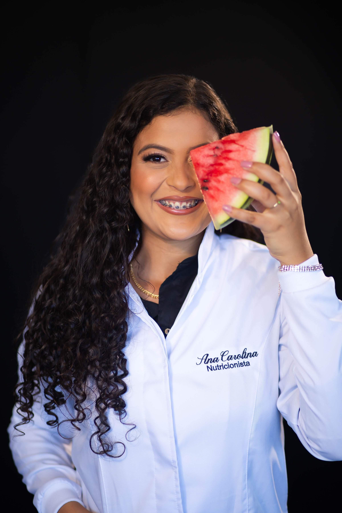

Transforme sua relação com a comida através de um acompanhamento nutricional individualizado e humanizado.
Conheça meus serviços
Tenho 24 anos e sou nutricionista clínica, formada pela Faculdade Ages – Campus Jacobina, com conclusão em 2023. Desde o segundo ano do ensino médio, a nutrição se tornou meu maior sonho, e hoje posso dizer, com muito orgulho, que faço o que amo.
A cada dia me sinto mais realizada e apaixonada por essa profissão que transforma vidas. Atualmente sou nutricionista clínica em Capim Grosso, onde atendo adolescentes, adultos e idosos, oferecendo um acompanhamento individualizado e humanizado.
Emagrecer com saúde vai muito além de contar calorias. É um processo que envolve equilíbrio, hábitos sustentáveis e respeito ao próprio corpo.
Nutrição estratégica e personalizada para ganho de massa magra e melhor desempenho físico.
A nutrição desempenha um papel essencial na prevenção de doenças como diabetes, hipertensão e obesidade.
Aprenda a construir uma relação equilibrada e consciente com a comida, sem dietas restritivas.
Identifique suas necessidades e conquiste resultados duradouros com um plano alimentar personalizado.
Entre em contato e dê o primeiro passo rumo a uma vida mais saudável.
Telefone: +55 (74) 99811-3396